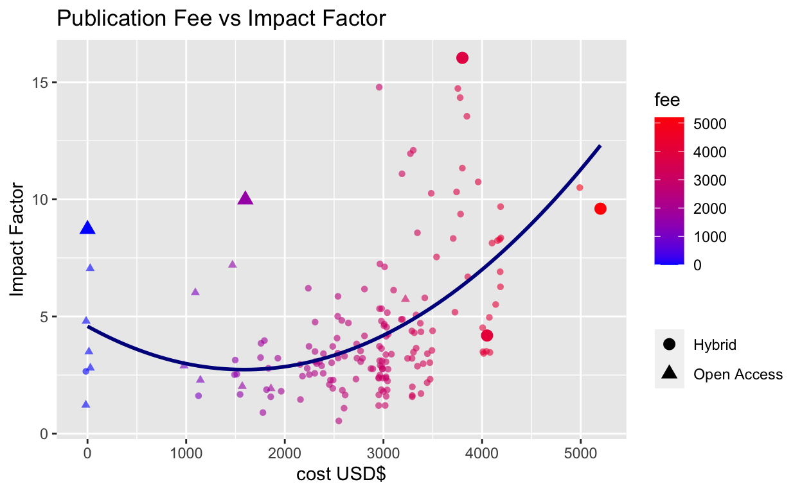

Journal impact factor vs publication fees.
When a research manuscript is finally ready for submission, its time for the delicate discussion of journal publication fees. Publishing ‘open-access’ (i.e., free for the public to read) attracts a higher charge than pay-per-view. In either case, the public, who in many cases paid for the research, also ultimately pay to read the results.
The strong influence that corporate publishing houses have on science, especially in biology, is due to their prestigious reputations. Highly read and highly cited journals are considered ‘high-impact’, and assigned an ‘impact factor’ (something approximating average number of citations per publication in the last year). This number is often used to judge the quality of a manuscript appearing in a journal, and affects the careers of its authors.
The impact factor system is flawed for many reasons that others have eloquently articulated, but given that the culture of impact factor-driven science still abounds, I wanted to compare the range of impact bang available for the public buck.
Here I investigate the relationship between impact factor and publication fees for a sample of Elsevier biological journals, using the web scraping and parallel processing functionality of R. ‘Scraping’ is the harvesting of data from websites by searching through the underlying html code to extract text.
First we use the rio() library to import an excel file
of journal publication
fees hosted at Elsevier.
library(tidyverse)
#thanks to https://stackoverflow.com/a/63910298
url <- "https://zenodo.org/record/1143853/files/elsevier_j.custom97.xlsx"
oa_cost <- rio::import(file= url) %>% select(1:5) %>% glimpse()Rows: 2,761
Columns: 5
$ ISSN <chr> "1876-2859", "1076-6332", "0001-4575", "0155…
$ `Journal Title` <chr> "Academic Pediatrics", "Academic Radiology",…
$ `OA Model` <chr> "Hybrid", "Hybrid", "Hybrid", "Hybrid", "Hyb…
$ Currency <chr> "USD", "USD", "USD", "USD", "USD", "USD", "U…
$ Price <chr> "3000", "2750", "3550", "1100", "1800", "275…There are some journals with author fee exemptions which are irrelevant for the question at hand and are removed
oa_cost %>% filter(str_detect(title,'\r\n† fee not payable by author')) %>% select(title) %>% head() title
1 Acta Pharmaceutica Sinica B\r\n† fee not payable by author
2 Acta Sociológica\r\n† fee not payable by author
3 African Journal of Emergency Medicine\r\n† fee not payable by author
4 African Journal of Urology\r\n† fee not payable by author
5 Ain Shams Engineering Journal\r\n† fee not payable by author
6 AKCE International Journal of Graphs and Combinatorics\r\n† fee not payable by authoroa_cost <- oa_cost %>% mutate(title = str_remove(title,'\r\n† fee not payable by author'))Now to convert the journal titles to lower case, and select some biology journals using a soft match on ‘bio’,‘gene’,‘geno’ and ‘life’:
To scrape the impact factor for each journal from the ScienceDirect database requires dynamically constructing the url, based on a template such as https://www.sciencedirect.com/journal/neurobiology-of-stress. The journal title will be lower case and hyphen-separated, appended after the final “/”. Based on trial and error, the string manipulation below to clean up commas, replace spaces with hyphens, and handle some edge cases, results in valid urls.
oa_for_scidir <- oa_for_url %>%
mutate(
title_lower = str_replace_all(title_lower,' ','-'),
title_lower = str_replace_all(title_lower,',',''),
title_lower = str_replace_all(title_lower,'bba---','biochimica-et-biophysica-acta-bba-'),
title_lower = str_replace_all(title_lower,'&','and'),
title_lower = str_remove_all(title_lower,':')) %>%
filter(!str_detect(title_lower,'-part-|biologies'))
## Workshop rvest rvest is the main web scraping
package in the tidyverse suite. It has handy functions to extract
features from html, such as html_text() and
html_table(). Searching the desired information in the
website source code will help to identify the relevant html nodes. This
can be tricky business but there is help
available!
The solution below isn’t elegant but gets the job done for a test example.
library(rvest)
x <- "neurobiology-of-stress"
read_html(paste0("https://www.sciencedirect.com/journal/", x)) %>%
html_nodes('span') %>% html_text() %>%
as_tibble() %>%
filter(str_detect(value,'Impact')) %>%
#retain only digits
filter(str_detect(value,'\\d')) %>%
#add a column containing the journal name, stored in x
mutate(journal=x)# A tibble: 1 × 2
value journal
<chr> <chr>
1 7.142Impact Factor neurobiology-of-stressThis code is now assigned as a function called sd_scrape, and wrapped
with tryCatch(), to make sure any errors in hitting the
website are logged, rather than causing the job to fail completely:
sd_scrape <- function(x){
tryCatch(
#web scraping code
read_html(paste0("https://www.sciencedirect.com/journal/", x)) %>%
html_nodes('span') %>% html_text() %>% as_tibble() %>%
filter(str_detect(value,'Impact')) %>%
filter(str_detect(value,'\\d')) %>%
mutate(journal=x),
#if an individual site scrape fails, create a 1-row results table with 'error' and the journal name
error = function(c) tribble(~value, ~journal, "error", x)
)
}The next code block does a lot of heavy lifting, and will ideally
only run once. At the outset is an if statement to make sure the rest of
the code block runs only if the rvest output is missing. The
scraping function is run using furrr::future_map(), which
makes it run in parallel — ideally 4x faster than scraping each journal
website one by one. I borrow heavily from this furrr
tutorial.
library(furrr)
if(exists("oa_impact")){print('oa_impact exists!')}else{
# set up parallel processors
future::plan(multisession(workers = 4)) # parallelly::availableCores()
# scrape sciencedirect based on an input vector of journal titles, and store results in oa_impact
oa_impact <- future_map( oa_for_scidir$title_lower , sd_scrape) %>%
bind_rows() %>%
#remove text from value column
mutate(value = as.numeric(str_remove(value,'Impact Factor')))
}Join the scraped impact factor and publication fee tables, and tag selected journals for increased plotting point size.
oa_cost_impact <- oa_impact %>%
left_join(oa_for_scidir, by = c('journal' = 'title_lower')) %>%
mutate(fee = as.numeric(fee)) %>%
#tag selected journals for increased plotting point size
mutate(upsize = ifelse(journal %in% c('redox-biology','bioactive-materials',
'international-journal-of-food-microbiology',
'trends-in-cell-biology','current-biology'), 'y','n') )This code fits a quadratic curve to the data, as well as jittering the points by $100 to handle over-plotting around x = $3000. The text aesthetic is not relevant for static ggplots, but required for interactive plotting below.
plot_scrape <- oa_cost_impact %>%
ggplot(aes(x = fee, y = value)) +
geom_point(data = . %>% filter(upsize=='n'),
aes(col = fee, text = title, shape = model),
position = position_jitterdodge(jitter.width = 100, jitter.height = 0),
alpha = 0.6) +
scale_color_gradient(low = 'blue', high = 'red') +
#ggrepel::geom_text_repel(data = . %>% filter(upsize=='y'),
# mapping = aes(label=title, col=fee)) +
geom_point(data = . %>% filter(upsize=='y'),
aes(col = fee, text = title, shape = model), size=3) +
stat_smooth(method = "lm", formula = y ~ x + I(x^2),
size = 1, se = F, col = "dark blue" ) + #fits parabola
xlab("cost USD$") + ylab("Impact Factor") +
ggtitle("Publication Fee vs Impact Factor") +
guides(shape = guide_legend(title = "")) # handles plotly legend overlap
plot_scrape 
The plotly() package allows conversion of static ggplots
into interactive plots. The key is to include the tooltip, which will
link to the text aesthetic in the ggplot call, and render the relevant
text when the user hovers the mouse over a data point.
ggplotly() renders legends slightly differently and can
lead to crowding. This is handled with the plotly::layout()
function.
The quadratic curve gives a reasonable fit and incorporates the
points at x = $0. There is a large spread of impact factors around the
line, meaning that the publication fee is a poor proxy for impact
factor, and vice versa. Despite this, journals with higher impact
factors tend to charge higher publication fees, and there are a good
number of exceptionally expensive lower impact journals at the bottom
right of the plot. Some extreme data points have been enlarged as plotly
struggles with labels.
In so far as value can be measured in this context, better to be
a bioactive materials or redox researcher than a food
microbiologist!